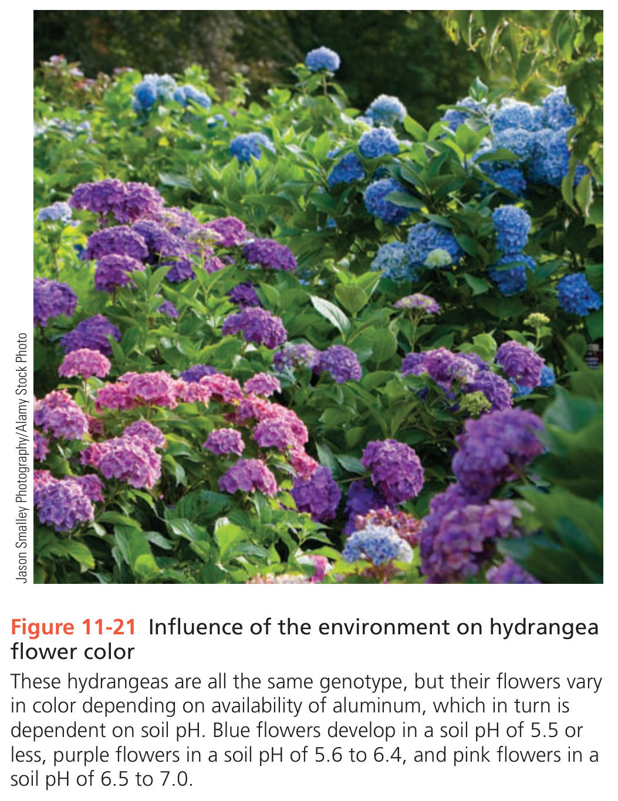
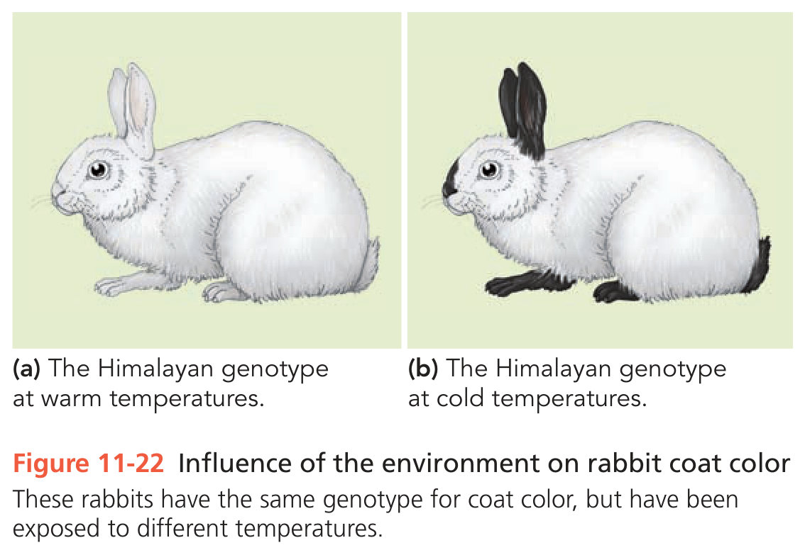
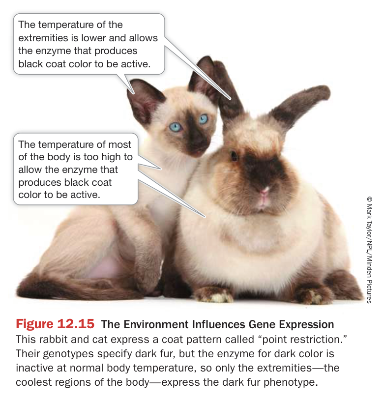
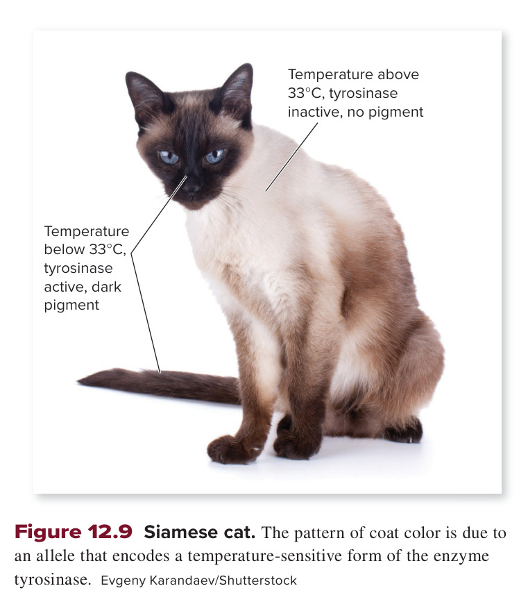
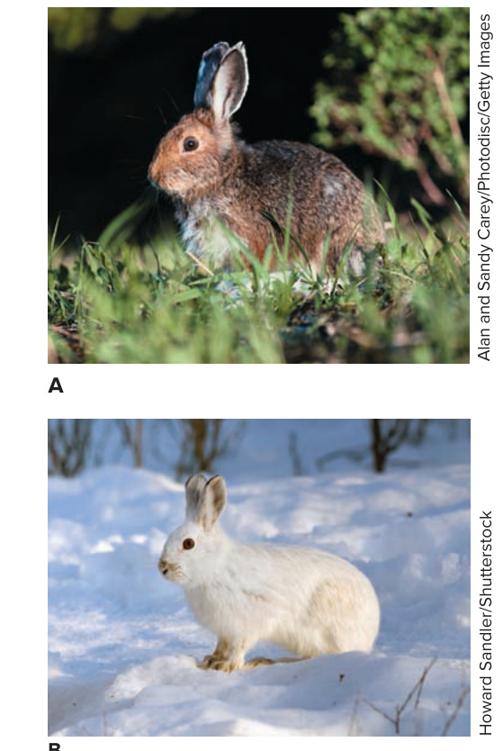
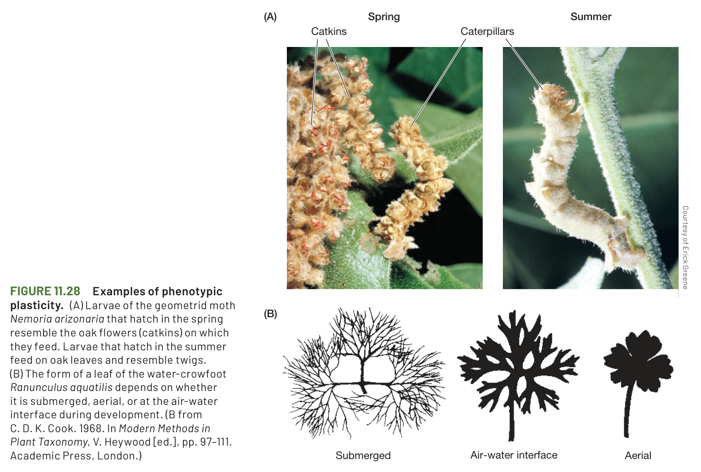

環境影響表現型＝基因調控嗎？繡球花、喜馬拉雅兔與雪靴兔三層次拆解
高一必修生物常把繡球花變色、喜馬拉雅兔低溫黑毛與雪靴兔換毛並排在「環境影響基因表現」單元。對照 9 部英文原典與高中 6 版教材，一次釐清哪些只是化學呈色與蛋白質構形問題、哪些才真正觸動轉錄層次的基因調控。
這三個例子都展現了表現型可塑性（phenotypic plasticity）——同一基因型在不同環境下呈現不同表現型——但並非全都屬於狹義的「基因調控（轉錄開關）」：
不是酸鹼值切換「藍花基因」與「粉紅花基因」。土壤偏酸（pH 5.5 以下）時游離鋁溶解度提高、易被根部吸收並與花瓣花青素形成藍色化合物；偏鹼（pH 6.5–7.0）時鋁不易溶解，花朵呈粉紅色（Campbell 13e；Solomon 11e）。
牠們帶有溫度敏感性等位基因（cʰ／cˢ），編碼熱不穩定的酪胺酸酶（tyrosinase）。深色毛基因在全身其實一直都有表現，但軀幹高溫（高於約 33–35 °C）使突變酵素摺疊異常而失去活性；耳、鼻、四肢末端或敷冰袋處溫度較低（約 25–30 °C），酵素得以維持活性而合成黑色素（Sadava 12e；Campbell 13e；Raven 13e；Pierce 7e；Brooker 8e）。
雪靴兔（原文書多譯「雪鞋兔」）靠季節性的日照長度與溫度變化觸發荷爾蒙訊號，啟動換毛並調控毛囊內色素合成相關基因表現，使新毛沉積不同色素（Starr 14e；Evolution 5e）。這才屬於「環境訊號 → 荷爾蒙／訊息分子 → 轉錄因子或表觀修飾 → 下游基因表現」的真正基因調控。
01 三例總對照與核心專有名詞解析
高一必修生物用「環境影響基因表現」來形容這些現象時，指的是廣義的表現型展現（phenotypic expression），也就是從基因型一路走到外觀性狀的整體結果；但到了高三選修生物講「基因表現的調控（gene regulation）」，討論的核心是細胞是否調整特定基因的轉錄與轉譯量。兩者若沒切分清楚，就會把「酵素高溫失活」誤認為「高溫關閉基因」。
| 比較項目 | 繡球花（Hydrangea） | 喜馬拉雅兔（暹羅貓同原理） | 雪靴兔（原文書譯「雪鞋兔」） |
|---|---|---|---|
| 表現型差異 | 酸性土開藍紫花，鹼性土開粉紅花 | 軀幹長白毛，低溫末端（耳、鼻、足、尾）與敷冰袋處長黑毛 | 夏季長棕色毛，冬季換成白色毛 |
| 屬於表現型可塑性？ | 是（相同基因型，不同土壤環境） | 是（相同基因型，局部體溫差異） | 是（相同基因型，季節光週期與氣溫） |
| 屬於狹義基因調控？ | 否 | 否 | 是 |
| 作用生理層次 | 色素合成後的化學呈色環境（游離鋁溶解度與吸收） | 轉譯後的蛋白質立體構形與酵素活性（熱不穩定突變酵素） | 荷爾蒙訊號 → 轉錄層次基因調控（季節性換毛與色素沉積） |
| 基因本身有無表現？ | 花青素合成基因皆有表現，差異在吸收鋁的量 | 酪胺酸酶基因在全身一直都有表現，差別在酵素於高溫下失活 | 隨季節荷爾蒙訊號切換毛囊內色素相關基因的表現與沉積 |
- 表現型可塑性（phenotypic plasticity）：單一基因型在不同環境條件下產生不同表現型的能力（Campbell 13e Ch. 14；Raven 13e Ch. 12）。它只描述「相同 DNA 在不同環境長出不同樣子」這個結果，不限定背後一定靠開關基因轉錄達成。
- 反應規範（norm of reaction）：單一基因型在不同環境條件下可能發育出的表現型範圍（Solomon 11e Ch. 11；Brooker Genetics 8e 譯為反應常模）。ABO 血型的反應規範極窄，人類身高與繡球花花色的反應規範則較寬。
- 溫度敏感性等位基因（temperature-sensitive allele）：編碼產物（多為酵素）只在特定溫度範圍內維持功能、超出該溫度即失活的突變等位基因（Pierce 7e Ch. 05；Brooker 8e Ch. 04）。突變改變了蛋白質熱穩定度，而不是改變 DNA 是否被轉錄。
- 基因調控（gene regulation）：細胞透過染色質修飾（表觀遺傳）、轉錄因子結合、RNA 加工或轉譯調控，決定特定基因在何時、何處表現以及表現多少（Campbell 13e Ch. 18）。高中課程講「基因調控」時，重點主要在轉錄層次的開關控制。
02 層次一（化學呈色環境）：繡球花為何隨土壤 pH 變色？
把同一株繡球花扦插出基因型完全相同的子代，分別種在酸性與鹼性土壤裡，花色會從藍紫色一路變到粉紅色。這個現象在「DNA → 蛋白質 → 色素 → 表現型」這條路徑上，介入點在最後一站（色素呈現顏色的化學環境）：
- 關鍵中介因子是「游離鋁（free aluminum）」：土壤酸鹼值並非直接把花瓣當成石蕊試紙變色，而是透過改變土壤中鋁元素的溶解度來影響植物吸收量（Campbell 13e Ch. 14；Solomon 11e Ch. 11）。
- pH 5.5 以下（酸性土壤）：鋁較易溶解而被根部吸收，進入花瓣組織後與花青素結合形成藍色化合物，花呈藍色；園藝上也可施用明礬或硫酸鋁促成藍花。
- pH 5.6–6.4（弱酸性土壤）：可利用鋁含量居中，花朵呈紫色。
- pH 6.5–7.0（微酸至中性／加入石灰石偏鹼）：鋁不易溶解且難被根部吸收，花青素則呈現粉紅色。

🔍 點擊圖片可全螢幕放大03 層次二（蛋白質構形與酵素活性）：喜馬拉雅兔與暹羅貓真的是基因沒表現嗎？
喜馬拉雅兔（cʰ 等位基因）與暹羅貓（cˢ 等位基因）的耳朵、鼻尖、腳掌與尾巴毛色深黑，身體軀幹卻是白色或淺色，這稱為末端限色（point restriction）。如果把喜馬拉雅兔背部的白毛剃掉並敷上冰袋，新長出來的毛竟然會變成黑色。
很多同學看到冰袋實驗，就以為「低溫打開了黑色素基因、高溫關掉了黑色素基因」。但遺傳學與普通生物學正典給出的分子答案非常明確：黑色素合成基因在全身細胞裡一直都有表現，出問題的是轉譯出來的酵素蛋白質不耐熱。
- 單一胺基酸誤義突變：編碼酪胺酸酶（tyrosinase，催化黑色素合成第一步的關鍵酵素）的基因發生誤義突變，改變了一個胺基酸，使酵素三維結構對溫度變得極為敏感（Campbell 13e Ch. 17；Brooker 8e Ch. 04）。
- 軀幹核心體溫較高（約 37–39 °C，超過失活門檻約 33–35 °C）：突變的酪胺酸酶無法維持正確摺疊而失去催化活性，即使基因持續轉錄與轉譯，也無法合成黑色素，因此長出白毛（胎兒在子宮內全身溫暖，剛出生時也全身皆白）。
- 身體末端較涼（約 25–30 °C）或背部敷冰袋降溫處：局部溫度低於失活門檻，突變酵素能摺疊成具功能的立體構形，順利催化黑色素生成而長出黑毛。

🔍 點擊圖片可全螢幕放大
🔍 點擊圖片可全螢幕放大
🔍 點擊圖片可全螢幕放大04 層次三（真正的基因調控）：雪靴兔換毛、水毛茛異形葉與表觀遺傳
那麼，什麼時候「環境影響表現型」才真的和基因調控有關？演化發育生物學正典 Evolution 5e（Futuyma, Ch. 11）點出了標準分子路徑：
環境刺激（日照長度、溫度、低氧、飲食） → 改變荷爾蒙或其他細胞傳訊分子濃度 → 影響轉錄因子活性或染色質表觀遺傳修飾（DNA 甲基化／組蛋白修飾） → 改變下游基因的轉錄表現量。
- 雪靴兔（Lepus americanus，原文書譯「雪鞋兔」）：與喜馬拉雅兔完全不同，雪靴兔不是靠冷空氣直接讓皮膚酵素變性，而是隨季節日照長度（光週期）與氣溫變化，由神經內分泌系統發出荷爾蒙訊號，啟動年度換毛並調控新長毛髮中色素的種類與沉積量（夏棕、冬白），提供配合季節的保護色（Starr 14e Ch. 13；Hickman 19e Ch. 28）。
- 異葉水蓑衣與水毛茛（Ranunculus aquatilis）：同一株植物的葉原基在水中（高濕、低溫）發育時啟動不同發育基因表現，長成羽狀深裂的沉水葉；在空氣中則長成完整平滑的陸生葉（Evolution 5e Fig. 11.28；高中南一版必修生物）。
- 水蚤（Daphnia）低氧反應：水中含氧量下降直接提升血紅素基因的表現量，使水蚤身體變紅並提高攜氧效率（Starr 14e Ch. 13）。
- 環境誘導的表觀遺傳調控：例如母鼠懷孕期飲食補充甲基供體改變後代 agouti 基因的 DNA 甲基化程度、荷蘭饑餓冬天妊娠期營養缺乏造成後代特定基因甲基化差異，以及同卵雙胞胎因生活環境不同累積 DNA 甲基化與疾病風險差異（Campbell 13e Ch. 18；Brooker 4e Ch. 16）。

🔍 點擊圖片可全螢幕放大
🔍 點擊圖片可全螢幕放大05 高中必修生物 6 版課文措辭比對：迷思從哪裡來？
檢索臺灣高中 108 課綱必修生物 6 套版本（生殖與遺傳單元「環境因子改變性狀的表現」），可以清楚看出為什麼許多學生（甚至教師在銜接選修課程時）會把喜馬拉雅兔誤認成轉錄基因調控：
| 教材版本 | 收錄主要案例 | 對喜馬拉雅兔機制的措辭寫法 | 與大學正典一致度 |
|---|---|---|---|
| 大學正典基準 （Sadava / Campbell / Raven / Pierce / Brooker） |
繡球花、喜馬拉雅兔、暹羅貓、雪鞋兔 | 明確指出深色毛基因一直有表現，是誤義突變使酪胺酸酶在高溫失去催化活性 | 正典標準 |
| 泰宇版 | 喜馬拉雅兔、繡球花（略提） | 寫末梢溫度降低使「黑色素生成酵素恢復活性」，未寫成基因不表現 | 最精準 |
| 翰林版／三民備課 | 喜馬拉雅兔（翰林附 33 °C 與冰袋）、洋繡球、韭菜／韭黃；三民正文舉雪靴兔、西洋蓍草 | 前後混合寫法：先說「酵素的基因表現受溫度調控」，緊接著又寫「高於 33 °C 呈不活化狀態／溫度低時酵素活性較高」 | 中等（容易造成前後語意混淆） |
| 龍騰版 | 繡球花（pH 3.5–5.5 與鋁）、喜馬拉雅兔（冰袋實驗） | 寫成「體溫較高的軀幹，基因則不表現，酵素缺乏，故無法合成黑色素」 | 超譯成轉錄層次（與分子實情不符，教學宜釐清） |
| 南一版 | 異葉水蓑衣、ALDH2*2 飲酒代謝 | 異葉水蓑衣寫較高濕度與較低溫度啟動相關基因表現 | 合理（異形葉屬發育基因調控） |
06 經典原文教科書白紙黑字考證
以下完整回溯本機知識庫（Vault）內 9 部英文教科書正典的原始中英對照段落，逐一驗證三個層次的白紙黑字根據。
"The effect of environment on phenotype. The outcome of a genotype lies within a phenotypic range that depends on the environment in which the genotype is expressed. For example, the acidity and free aluminum content of the soil affect the color of hydrangea flowers, which range from pink (basic soil) to blue-violet (acidic soil)."
"The striking pigment pattern seen in Siamese cats is due to an environmental effect on the enzyme tyrosinase, which catalyzes the first step in melanin synthesis. The cS allele in cats encodes a heat-sensitive variant of tyrosinase that is inactive in warmer central regions of the body, but active in colder peripheral regions (figure 12.9)."
07 高中教學提示、教甄實戰與查證邊界
高一必修上到這個單元時，不必硬塞高三轉錄因子細節，但建議在黑板上畫出一條簡單的五站箭頭：「DNA（基因型） → 轉錄（基因調控） → 蛋白質（酵素活性） → 化學呈色（色素環境） → 表現型」，再把三個例子貼在各自的位置——雪靴兔貼在轉錄調控、喜馬拉雅兔貼在酵素活性、繡球花貼在色素化學環境。學生一眼就能看懂「三者都是環境影響表現型，但介入的站點不同」，將來學選修生物基因調控也不會錯亂。
題幹重點：園丁從同一株藍花繡球花母本扦插獲得 100 株花苗種於花園各區，開花時多數為粉紅花、僅約三分之一開藍花，問最合理的解釋為何？
唯一判準：看到「扦插（無性生殖）」就知道 100 株花苗與母本基因型完全相同，因此所有涉及基因型差異的干擾項（複等位基因、完全顯性、共顯性）全數淘汰，正解為 (D) 環境因素如土壤 pH 值等會影響花色基因的表現型。
常見命題陷阱與延伸閱讀
- 陷阱 1（冰袋實驗可遺傳嗎？）：喜馬拉雅兔背部敷冰袋長出黑毛後，與同品種交配所生子代背部並不會自動長黑毛——環境僅改變局部體表毛囊的酵素作用溫度，未改變生殖細胞 DNA。
- 陷阱 2（繡球花不是單純酸鹼指示劑）：若酸性土壤本身缺乏游離鋁，繡球花仍無法開出純藍花；關鍵是土壤 pH 控制了游離鋁的可利用性。
- 譯名留意：高中三民版譯為「雪靴兔」，英文教科書譯本（Starr、Campbell、Hickman）多譯「雪鞋兔」，兩者皆指北美 Lepus americanus；此外臺灣統一使用「表現型可塑性」，不使用中國用語「表型可塑性」。
- 延伸閱讀：啟動子、TATA 匣與 DNA 甲基化怎麼調控轉錄？、沒有感官怎麼感知世界？（細菌乳糖 vs. 植物光週期）、鐮刀型貧血顯隱性層次分析。
本頁所有核心定義、溫度門檻、冰袋實驗詮釋與高中 6 版教材比對，皆來自 Ze-Agent Vault 內 9 部英文原典（Campbell 13e、Solomon 11e、Sadava 12e、Raven 13e、Starr 14e、Pierce 7e、Brooker Genetics 8e、Hickman 19e、Evolution 5e）與高中必修跨版本整合、115 新北高中聯招第 50 題。
以下進階生理分子細節於本機原文書譯本中查無直接展開，屬外部學術常識補充並明確標示邊界：① 繡球花萼片液胞中飛燕草素-3-葡萄糖苷（delphinidin-3-glucoside）、輔色素與 Al³⁺ 依液胞 pH 與鋁轉運蛋白形成金屬錯合物之精細配位化學（原書僅載「土壤 pH 與游離鋁溶解度／可利用性」）；② 雪靴兔光週期經松果腺褪黑激素、催乳素進一步調控毛囊內 Agouti 等基因表現之詳細內分泌分子通路（Starr 14e 僅載至「季節日照與溫度觸發荷爾蒙訊號，控制換毛與新毛色素沉積」）。